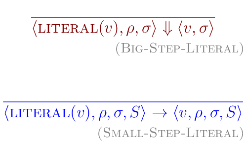
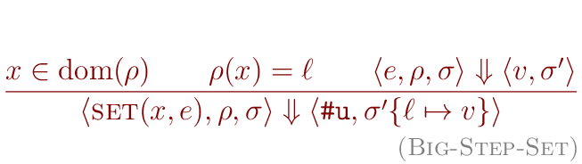

# CS 131:<br/>Programming Languages ## _Lecture 9_:<br/>The _$\mu$Scheme+_ Language: Operational semantics --- ## Today * The _$\mu$Scheme+_ language: operational semantics --- ## Overview * The _$\mu$Scheme+_ language is _$\mu$Scheme_ extended with "control operators" * `break` and `continue` * `throw` and `try-catch` * `return` --- ## Overview * Last time, we saw that adding control operators requires us to change our evaluator to use a stack of "contexts" * Each "context" represents a partially-evaluated expression --- ## Overview * This also requires us to change the operational semantics from a "big-step" semantics to a more granular "small-step" semantics * In this lecture, we will present and discuss the small-step semantics for the _$\mu$Scheme+_ language --- ## Structure of the semantics * In the big-step semantics, each semantics "judgment" has the form<br/> $\langle e, \rho, \sigma \rangle \Downarrow \langle v, \sigma' \rangle$ * A judgment is the conclusion of a "rule" (below the line) * This says: the expression $e$ evaluates (after one or more steps) to a value $v$, possibly modifying the store $\sigma$ to $\sigma'$, but not modifying the environment $\rho$ --- ## Structure of the semantics * In small-step semantics, semantic judgments look quite different: $\langle e/v, \rho, \sigma, S \rangle \rightarrow \langle e'/v', \rho', \sigma', S' \rangle$ * Notice that the "reduction arrow" ($\Downarrow$) has been replaced with the "step arrow" ($\rightarrow$) * Meaning: you aren't reducing a form to its ultimate result; you're just performing _one_ step of the evaluation --- ## Structure of the semantics $$ \langle e/v, \rho, \sigma, S \rangle \rightarrow \langle e'/v', \rho', \sigma', S' \rangle $$ * Notice also that instead of $e$ on the left and $v$ on the right, we have $e/v$ and $e'/v'$ * Sometimes, steps involve expressions, and sometimes they involve values --- ## Structure of the semantics $$ \langle e/v, \rho, \sigma, S \rangle \rightarrow \langle e'/v', \rho', \sigma', S' \rangle $$ * Notice that the store ($\sigma$) and the environment<br/>($\rho$) can _both_ change as the result of a step --- ## Structure of the semantics $$ \langle e/v, \rho, \sigma, S \rangle \rightarrow \langle e'/v', \rho', \sigma', S' \rangle $$ * In big-step semantics, only the store could change when evaluating an expression * However, a partially-evaluated `let` expression (among others) could certainly alter the environment * (even though it would eventually go back to what it was before) --- ## Structure of the semantics $$ \langle e/v, \rho, \sigma, S \rangle \rightarrow \langle e'/v', \rho', \sigma', S' \rangle $$ * Finally, notice the extra $S$ argument * This is the context stack, which can change as the result of evaluating a step --- ## Semantics: typical cases * Before we show you the actual rules of the semantics, it's worth focusing in on typical classes of cases that show up in multiple rules --- ## Semantics: typical cases $$ \langle e, \rho, \sigma, S \rangle \rightarrow \langle e', \rho, \sigma, F :: S \rangle $$ * In this case, $e'$ is a subexpression of $e$ * The rest of $e$ is contained in the context $F$ which is pushed onto the stack $S$ * The $::$ operator represents "pushing onto the stack" --- ## Semantics: typical cases $$ \langle e, \rho, \sigma, S \rangle \rightarrow \langle e', \rho, \sigma, F :: S \rangle $$ * Conceptually, $F$ is just $e$ where the $e'$ subexpression has been replaced with a "hole" where its value will eventually go * $F$ stands for "frame" _i.e._ a particular kind of context --- ## Semantics: typical cases $$ \langle v, \rho, \sigma, F :: S \rangle \rightarrow \langle e, \rho, \sigma, S \rangle $$ * Here, $e$ is the result of plugging $v$ into a "hole" in frame $F$, which gets popped off the stack --- ## Semantics: typical cases $$ \langle e, \rho, \sigma, F :: S \rangle \rightarrow \langle e, \rho, \sigma, S \rangle $$ * Here, $e$ is a control operator (like `break`) which simply pops the context stack and continues looking for the place where it will terminate --- ## Semantics: typical cases $$ \langle e, \rho, \sigma, [] \rangle \rightarrow^{*} \langle v, \rho, \sigma', [] \rangle $$ * Here, $e$ is a top-level expression or part of a definition * It evaluates to a value $v$, possibly changing the store * The $\rightarrow^{*}$ means "one or more steps" --- ## Semantics: typical cases $$ \langle e, \rho, \sigma, [] \rangle \rightarrow^{*} \langle v, \rho, \sigma', [] \rangle $$ * $[]$ represents an empty stack * Once the stack is empty, and the right-hand side of $\rightarrow^{*}$ is a value, we have finished evaluating the form $e$ --- ## Semantics walkthrough * OK, now we will begin going through the actual operational semantics rules * There are a lot of them (more than in any other language in this course), so strap yourself in! --- ## Small-step semantics: literals  * The upper rule is the big-step rule; the lower rule is the small-step rule --- ## Small-step semantics: literals * Other than the presence of the stack $S$ (which doesn't change), there is no difference: literals evaluate to themselves --- ## Small-step semantics: variables * Variables are also basically the same; just look them up in the environment --- ## Small-step semantics: `lambda` * `lambda` forms are also the same: just make a closure --- ## Small-step semantics: `set` * The simplest example of using the stack is the rule for assignment (`set`) * An assignment is composed of two parts: * Evaluate an expression to get a value * Assign the value to a name --- ## Small-step semantics: `set` * The big-step rule does this all in one rule:  --- ## Small-step semantics: `set` * The small-step rule divides this into two rules * First, do the evaluation of the expression $e$: <img src="images/small_step_set_1.png" alt="small_step_set_1.png" /> * This rule pushes the `set` expression (with a hole where the value goes) onto the stack * Then the expression $e$ is evaluated according to one of the other rules --- ## Small-step semantics: `set` * Once the expression $e$ has been evaluated to the value $v$, we can pop the stack and finish the assignment: <img src="images/small_step_set_2.png" alt="small_step_set_2.png" /> * Notice how the store $\sigma$ gets updated in this rule --- ## Small-step semantics: `if` * In an `if` form, we start by evaluating the test expression $e_1$ --- ## Small-step semantics: `if` * The rest of the expression (the `if` with a hole where the result of evaluating $e_1$ goes) gets pushed onto the stack * Then $e_1$ gets evaluated according to the other rules --- ## Small-step semantics: `if` * These two rules show how we resolve the `if` once the test expression $e_1$ has been evaluated to the value $v$ --- ## Small-step semantics: `if` * Notice how the _IF_ frame gets popped off the stack in both cases --- ## Small-step semantics: Function application * Function application requires six (6) rules to specify completely * (Actually, the last rule is a family of rules, one for each primitive function) * Take a deep breath... --- ## Small-step semantics: Function application * To apply a function, first evaluate the expression in "function position", which is $e$ * The rest of the expression is pushed onto the stack, with a hole where the function will go --- ## Small-step semantics: Function application * Once the function position expression has been evaluated to a value $v$, evaluate the expression in the first argument position $e_1$ --- ## Small-step semantics: Function application * Push the rest of the expression (evaluated and unevaluated parts) back onto the stack: * The function value $v$ (evaluated) * The other arguments $e_2$, $e_3$, ... $e_n$<br/>(not evaluated) --- ## Small-step semantics: Function application * When you are in the middle of evaluating the function's argument expressions, some of them have been evaluated to values and some haven't --- ## Small-step semantics: Function application * Take the first unevaluated expression $e_{i+1}$ and evaluate that, putting the previously-evaluated argument value $v_i$ back onto the stack along with the rest of the expression (evaluated and unevaluated parts) --- ## Small-step semantics: Function application * (This represents a left-to-right evaluation order) --- ## Small-step semantics: Function application * Once you've evaluated the last argument (to the value $v_n$), things get more complicated --- ## Small-step semantics: Function application * We evaluate the function body expression ($e_c$) in a new environment which extends the original environment $\rho_c$ by binding the formal argument names $x_i$ to their values $v_i$ (via $\sigma_n$ and $\ell_i$) --- ## Small-step semantics: Function application * The store is used as an intermediary between the names and the values, as usual --- ## Small-step semantics: Function application * Also, we have to be able to restore the old environment $\rho$ when we finish evaluating the body of the function --- ## Small-step semantics: Function application * We do this by pushing a _CALLENV_ frame onto the stack which contains the old environment $\rho$ --- ## Small-step semantics: Function application * Once the body of the function has been evaluated to a value $v$, we don't need the new environment anymore, so we restore the old one by popping off the _CALLENV_ frame --- ## Small-step semantics: Function application * The previous discussion assumed that the function being applied was a user-defined function (a closure) --- ## Small-step semantics: Function application * However, it could also be a primitive (like `+`) * In this case, once the last argument is evaluated, just apply the function to the evaluated arguments to get the result value --- ## Small-step semantics: `let` * Evaluating `let` expressions was quite complicated in the big-step semantics * The small-step semantics is complicated too, but the complexity is divided up between multiple rules (like it is for function application) --- ## Small-step semantics: `let` * To start with, evaluate the first expression $e_1$ in the first binding --- ## Small-step semantics: `let` * Continue evaluating the binding expressions, adjusting the stack frame accordingly --- ## Small-step semantics: `let` * After evaluating the last binding expression: * Create a new environment with all the $x_i \mapsto v_i$ bindings * Evaluate the body $e$ in that environment * Push a _LETENV_ frame containing the old environment onto the stack --- ## Small-step semantics: `let` * Once the let body is evaluated to a value $v$, restore the original environment --- ## Small-step semantics: `let*` * The circled values are not holes; they just indicate which subexpression is being evaluated --- ## Small-step semantics: `let*` * The rule which restores the original environment (pops _LETENV_ off stack) is the same as the corresponding rule for `let` --- ## Small-step semantics: `let*` * `let*` doesn't need to store any values on the stack when evaluating bindings, since they are always put into the environment immediately --- ## Small-step semantics: `let*` * (This is why we don't use holes to represent the expression being evaluated) --- ## Small-step semantics: `letrec` * This is basically `let` with "unspecified" bound to all $x_i$ before the start --- ## Small-step semantics: `begin` * We put `#u` instead of `#f` in second rule (only relevant for empty `begin`) --- ## Small-step semantics: `while` * Note that _WHILE_ and _WHILE_RUNNING_BODY_ frames contain both $e_1$ and $e_2$ --- ## Small-step semantics: `while` * (May need to evaluate entire expression again!) --- ## Small-step semantics: `while` * Again, we make `while` return `#u`, not `#f` --- ## Small-step semantics: `break` * `break` is pretty simple in the small-step semantics: * Again, `break`ing out of a `while` loop returns `#u`, not `#f` --- ## Small-step semantics: `break` * `break` is pretty simple in the small-step semantics: * Note that we can't unwind the stack past a function call boundary (_CALLENV_ on the stack) --- ## Small-step semantics: `break` * `break` is pretty simple in the small-step semantics: * Note omission: _LETENV_ frame must change environment when popped from `break` --- ## Small-step semantics: `continue` * The transfer rule is the only difference between `break`'s and `continue`'s semantics * `break` exits the `while`; `continue` restarts it --- ## Small-step semantics: `continue` * Note omission: _LETENV_ frame must change environment when popped from `break` --- ## Small-step semantics: `return` * This is pretty obvious when you think about it * No need to worry about _LETENV_ on stack (why?) --- ## Small-step semantics: exception handling --- ## Small-step semantics: exception handling --- ## Small-step semantics: exception handling * There is a _lot_ of subtle stuff going on with the `throw` and `try`/`catch` rules! --- ## Small-step semantics: exception handling * Let's start with the simple stuff: * In order to evaluate a `throw` expression, first evaluate its subexpression * The `throw` (with a hole for the value to throw) goes on the context stack --- ## Small-step semantics: exception handling * Before installing an exception handler ($e_h$), you have to evaluate it to get a function * The body of the `try`/`catch` ($e_b$) goes on the context stack --- ## Small-step semantics: exception handling * If the exception handler evaluates to a function, install it as an exception handler on the context stack * Then start evaluating the body of the `try`/`catch` --- ## Small-step semantics: exception handling * The _LETENV_ form goes on the stack in case there are more forms to evaluate after the `try`/`catch` (like in a `begin` form) * In that case, need to make sure that we restore the correct environment (subtle!) --- ## Small-step semantics: exception handling * If the exception handler _doesn't_ evaluate to a function, it's an error, and the operational semantics has nothing further to say about it * evaluation "gets stuck" as usual on errors --- ## Small-step semantics: exception handling * In the case of a `throw`, unwind the context stack until we hit a `try`/`catch` frame * We don't care about function call boundaries --- ## Small-step semantics: exception handling * In the case of a `throw`, unwind the context stack until we hit a `try`/`catch` frame * We don't adjust the environment when popping a _LETENV_ or _CALLENV_ frame either (why?) --- ## Small-step semantics: exception handling * In the case of a `throw`, unwind the context stack until we hit a `try`/`catch` frame * Once we get to a `try`/`catch` frame, apply the exception handler to the value thrown --- ## Small-step semantics: definitions * Definitions are not really any different from the big-step versions except for an empty stack component --- ## Small-step semantics: definitions * Note in top rule: $\rho$ can't actually change while evaluating expression --- ## Small-step semantics: definitions * Note in second rule: we don't return value $v$ set when evaluating $SET$ (just `#u`) --- ## Summing up * There are so many rules because * The control operators have complicated semantics * Small-step semantics are fine-grained, and need a lot of detail to explain them * Kind of grungy, but you need this much detail to write the evaluator! --- ## Next time * Walkthrough of the _$\mu$Scheme+_ code base